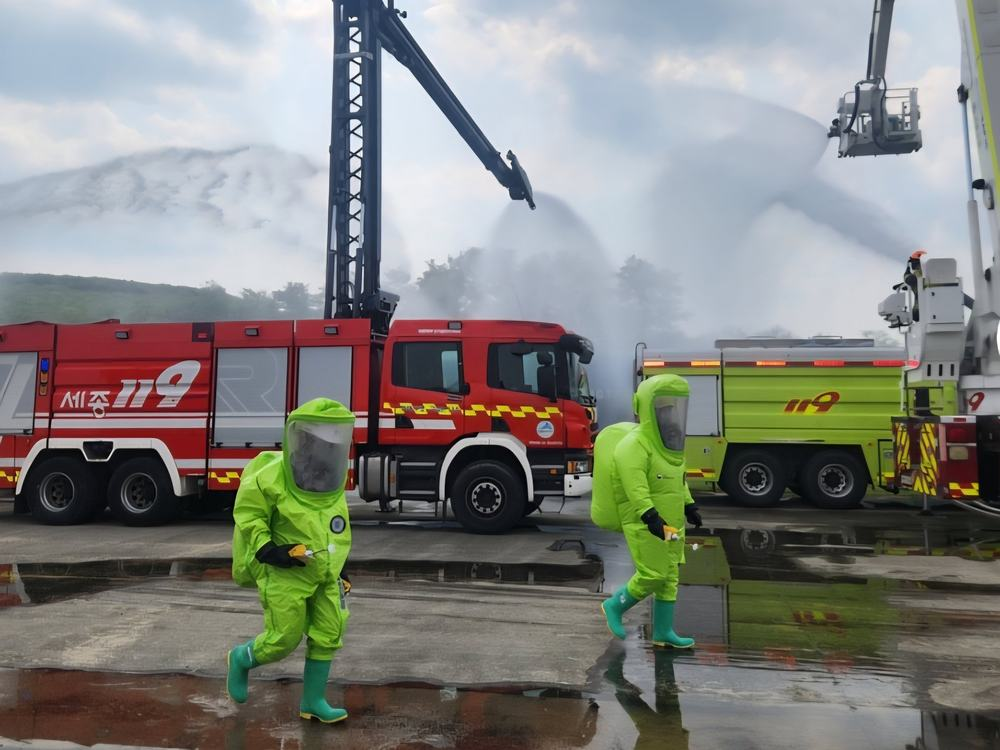
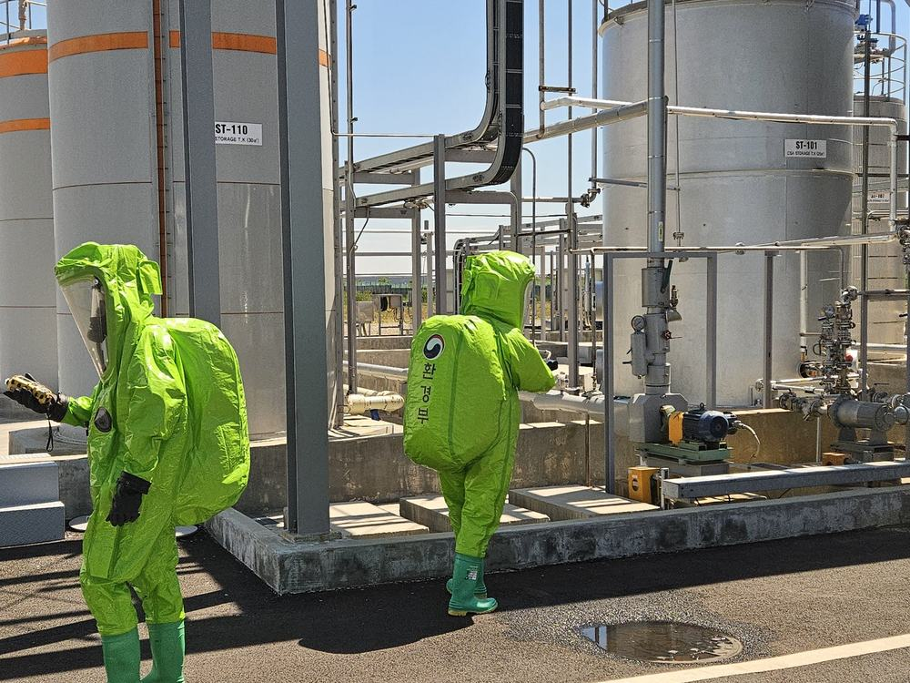
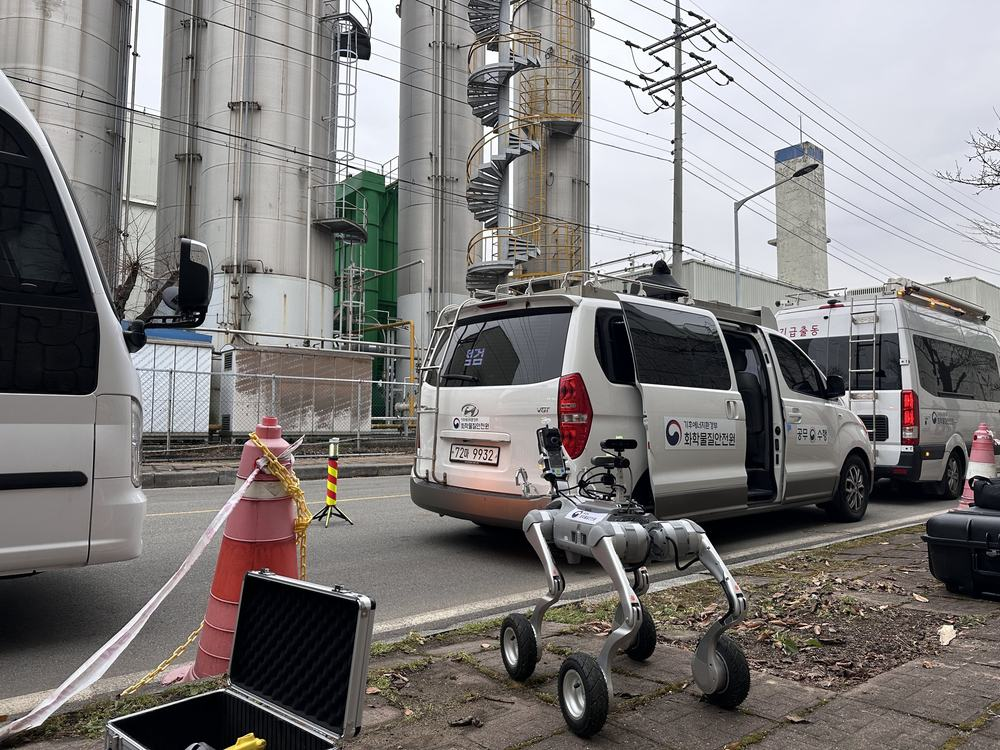

업무도구 3종
-
대피장소 지도
사고지점을 찍으면 주변 대피장소를 가까운 순으로 찾습니다. 거리·도보시간·영향 참고 반경·풍하방향을 함께 봅니다.
이용하기 -
주민대피 문자 작성
한 걸음에 한 가지만 묻고, 다 채우면 재난문자 표준문안이 만들어집니다. 90자를 넘으면 줄일 곳을 짚어 줍니다.
이용하기 -
방제자원 동원
지자체 보유 장비·비상캡슐·폐기물 처리·해경 비축기지를 사고지점에서 가까운 순으로 찾습니다. 여러 곳을 담아 한 번에 연락합니다.
이용하기


업무 참고도구입니다
어느 대피장소가 적절한지, 어디까지 대피시킬지는 이 도구가 판단하지 않습니다. 최종 판단과 책임은 관계기관에 있습니다.
거리는 지형·도로를 고려하지 않은 직선거리이고, 도보·차량 소요시간은 그것을 늘려 잡은 어림값입니다. 지도의 반경 원은 물질정보에 적힌 참고 거리이며 확산 모델링 결과가 아닙니다.
현장 사진
-

소방 방수와 보호복 -

저장탱크 주변의 보호복 -

현장에 내린 관측 장비 - 새벽 해안
화학물질안전원에서 촬영한 사진입니다. 특정 사고를 가리키지 않습니다 — 이 화면을 설명하기 위한 것입니다.